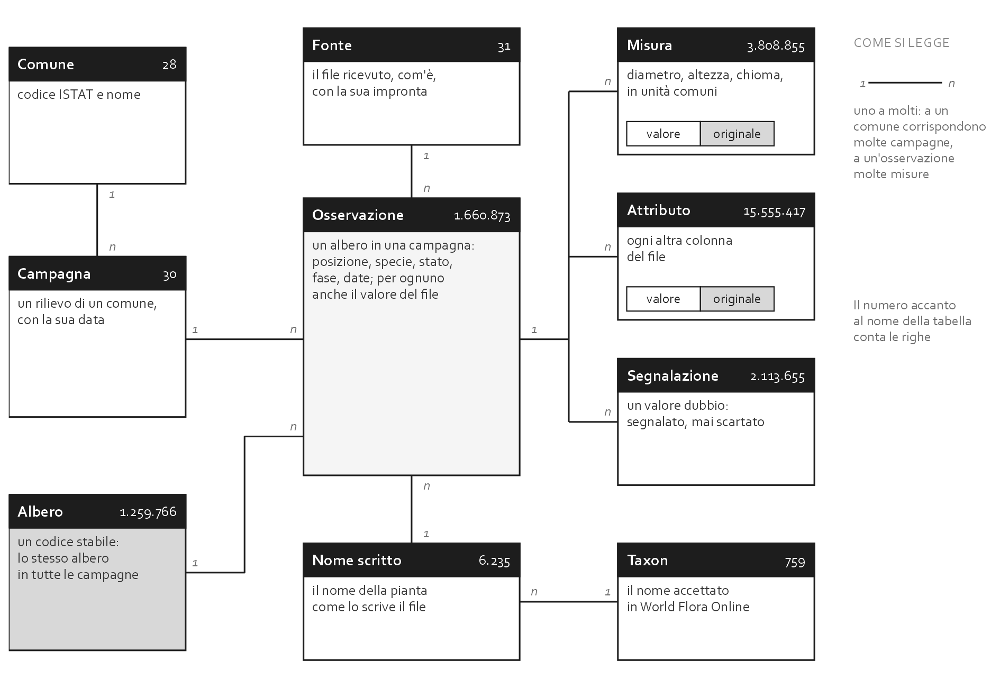

Il database dei censimenti arborei
Allegato E, capitolo 4
Il dettaglio del paragrafo 4.1: che cosa contiene l’archivio dei censimenti arborei comunali e come si usa, le scelte per la gestione dei dati con i loro riferimenti, le note richiamate dal capitolo e il dizionario dei dati. I dati per singolo albero non sono pubblicati.
Il Modello dati per il censimento del verde urbano (Guzzetti et al. 2020) elenca i campi obbligatori di ogni albero: identificativo, area, genere, specie, stato, date. Messi accanto a quell’elenco, quasi tutti i ventotto comuni ne lasciano alcuni vuoti, e il database registra comune per comune quali.
I dati per singolo albero non sono qui. Sono stati ottenuti a fini di studio, con condizioni diverse da fonte a fonte, elencate in FONTI_E_PERMESSI.csv; per prudenza si pubblicano solo risultati aggregati: il database completo, versione 1.0 del 12 ottobre 2026 (28 comuni, 30 campagne, 31 sorgenti, 1.660.873 osservazioni, 1.259.766 alberi con codice stabile), è un allegato non stampato riservato alla commissione di dottorato; l’allegato online della tesi è il pacchetto dei soli dati aggregati. Entrambi hanno un file LEGGIMI con le condizioni d’uso e le impronte SHA-256 dei file. Il database si cita come: Ferretti, E. (2026). Database dei censimenti arborei italiani, versione 1.0 [allegato riservato alla commissione di dottorato]. Università degli Studi di Firenze.
E.1 Che cosa contiene l’archivio e come si usa
1. Che cos’è
Un solo file GeoPackage, censimenti_arborei_IT_v1.0.gpkg, in RDN2008 / Italy zone (EPSG:7794). Si apre con QGIS, con R (sf, RSQLite) o con qualunque programma che legga SQLite.
| Comuni | 28 |
| Campagne di rilievo | 30 (Firenze e Bologna ne hanno due) |
| Sorgenti | 31: 25 file dei comuni, 6 dal dataset europeo di Benno A. Augustinus |
| Osservazioni di alberi | 1.660.873 |
| Alberi fisici con codice stabile | 1.259.766 |
| Alberi presenti nelle campagne di riferimento, fonti principali | 1.212.539 (base delle analisi di diversità) |
| Nomi scritti nelle sorgenti | 6.235, risolti su 759 taxa di World Flora Online |
| Misure / attributi / eventi | 3.808.855 / 15.555.417 / 51.483 |
| Segnalazioni di qualità | 2.113.655 |
Roma, Padova e Nocera Inferiore, che vengono dal dataset europeo di Benno A. Augustinus, non hanno coordinate per albero.
2. Il principio
Il valore scritto dal comune non si sovrascrive mai. Accanto a ogni valore tradotto resta l’originale: il nome scritto accanto al nome risolto, la classe accanto all’intervallo, le coordinate d’origine con il loro codice EPSG accanto a quelle nazionali. Nulla si scarta: un valore dubbio diventa una segnalazione, e sono le viste a decidere che cosa usare per ciascuna analisi.
3. Come è organizzato
Il centro è l’osservazione: un albero in una campagna. Intorno:
- ente, campagna, sorgente, campagna_sorgente: il comune, la data dei dati, il file da cui vengono (con impronta SHA-1, formato, codifica, sistema di riferimento d’origine).
- campo_sorgente, mappatura: ognuna delle 787 colonne dei file e dove è andata, con la regola applicata.
- elemento, geom_elemento, osservazione_albero: l’oggetto, la sua posizione in EPSG:7794 e i dati dell’osservazione (nome, stato, fase, protezione, date, area, coordinate d’origine).
- individuo, codice_albero: l’albero fisico che dura fra campagne e fonti, con il codice stabile SIGLA-000000 (per esempio FIR-000001).
- nome_verbatim, risoluzione_nome, taxon: il nome come è scritto, la sua risoluzione su World Flora Online con controllo GBIF (metodo, regola, stato WFO), il taxon accettato.
- misura, attributo, evento: diametri, circonferenze, altezze e chiome con valore, intervallo, unità, metodo e valore originale; ogni altra colonna in forma lunga; valutazioni, lavori e documenti datati.
- segnalazione, dubbio, dubbio_osservazione: i problemi rilevati in automatico (regola, dettaglio, gravità) e i dubbi motivati del ricercatore.
- voc_: vocabolari controllati (stato, fase, grandezza, metodo, regola…).
Il diagramma delle tabelle principali è la Figura 4.1.1 della tesi; schema_database.png e schema_database.dbml lo riportano per intero. Ogni colonna è descritta in DIZIONARIO_DATI.csv.
Tabelle previste dallo schema ma vuote in questa versione: oggetto, requisito, servizio_ecosistemico, decodifica, correzione_sorgente. Le 31 tabelle grezze (copie fedeli dei file) restano nel database di lavoro e non sono nell’allegato.
4. Le viste da usare
| Vista | Che cosa contiene |
|---|---|
| v_osservazione | ogni osservazione con campagna, nome scritto, risoluzione, genere, famiglia, specie e dubbi |
| v_attuale | la stessa, limitata alla campagna di riferimento di ogni comune (la più recente) |
| v_biodiversita | osservazioni primarie di alberi presenti |
| v_biodiversita_attuale | la stessa, nelle campagne di riferimento: base delle analisi di diversità |
| v_dimensioni | misure senza i valori segnalati come incoerenti o con unità sbagliata |
In QGIS: trascinare il file nella finestra, oppure Layer → Aggiungi layer → Aggiungi layer vettoriale. Se le viste non compaiono, impostare l’opzione LIST_ALL_TABLES su YES. Nell’allegato c’è anche vista_alberi_campagne_riferimento.csv.gz, la vista v_attuale pronta, con codice stabile e coordinate.
5. Condizioni d’uso
Il database contiene dati per singolo albero, ottenuti a fini di studio, con condizioni diverse da fonte a fonte; per prudenza si pubblicano solo risultati aggregati. È riservato alla commissione di dottorato e non va pubblicato né ridistribuito. Condizioni fonte per fonte in FONTI_E_PERMESSI.csv.

Figura E.1. Le tabelle principali del geodatabase dei censimenti e come si collegano. Al centro l’osservazione, cioè un albero in una campagna, legata al comune e alla campagna, all’albero con il suo codice stabile, alla fonte da cui viene e al nome scritto nel file; misure e attributi conservano accanto al valore normalizzato il valore originale. Il numero accanto al nome di ogni tabella ne conta le righe. Diagramma entità-relazione nella notazione 1:n di Chen (1976, pag. 20). Elaborazione dell’autore.
E.2 Le scelte per la gestione dei dati
Il valore originale non si sovrascrive. Accanto a ogni valore normalizzato resta quello scritto dal comune: il nome, la classe, le coordinate d’origine con il loro codice EPSG. Il gruppo TDWG-GBIF sulla qualità dei dati di biodiversità raccomanda che i valori originali «are never overwritten» (Chapman et al. 2020, pag. 26), e Darwin Core ha campi apposta per l’originale (Wieczorek et al. 2012).
La qualità si giudica rispetto all’uso. Il database tiene tutti i record e sono le viste a filtrare, una per ciascun uso. Un albero con l’altezza fuori scala resta valido per la composizione delle specie e non per le dimensioni. Il riferimento è il principio per cui «data do not have quality, except in the context of some use» (Chapman et al. 2020, pag. 7).
Misure, classi e stime restano distinte. Di una classe si tiene l’intervallo e il valore centrale si deriva solo dove serve; le classi aperte, come «> 120», non hanno centro e restano aperte. Galle et al. (2021, pag. 3) sostituiscono la classe con il suo valore medio, che con le classi aperte non funziona; Darwin Core separa valore, unità, metodo e accuratezza (Wieczorek et al. 2012).
Le classi rispetto al CAM: altezza sì, diametro no. Il CAM chiede l’altezza come «stima o misura» e il diametro come «rilevato il diametro della pianta ad un’altezza di 1,30 m» (Ministero dell’Ambiente 2020, pag. 17). Una classe di altezza è una stima e vale; una classe di diametro non è un diametro rilevato.
Valori fuori scala: segnalati, mai cancellati. Si segnalano tre casi: valore oltre il 99° percentile del comune (Galle et al. 2021, pag. 3), altezza incoerente con il diametro per la specie (McPherson et al. 2016, pag. 23), unità probabilmente sbagliata (McCoy et al. 2022, pag. 11). Togliere il 99° percentile, come fa Galle, eliminerebbe per costruzione gli alberi più grandi di ogni comune, cioè i monumentali.
Autore e data dell’ultima modifica non sono rilevatore e data di rilievo. Il Modello dati li definisce come nome dell’operatore che ha apportato l’ultima modifica e data di aggiornamento dell’elemento (Guzzetti et al. 2020, pag. 12); il CAM chiede invece l’operatore e la data del rilievo (Ministero dell’Ambiente 2020, pag. 17). Una data di caricamento in blocco non è una data di rilievo.
Tassonomia: World Flora Online come riferimento, GBIF come controllo. The Plant List «has not been updated since 2013 and has since been succeeded by the World Flora Online» (Yang et al. 2026, pag. 2); WFO è curato da specialisti e senza standardizzazione dei nomi la ricchezza di specie si gonfia (Kindt 2020). Gli abbinamenti approssimati si controllano a mano, come fanno Ossola et al. (2020, pag. 1909), McCoy et al. (2022, pag. 11) e Yang et al. (2026, pag. 4).
Record solo genere, cultivar e ibridi. I record fermi al genere restano e le analisi si fanno su due livelli, la specie sui nomi risolti e il genere su tutti, come in Cowett e Bassuk (2017, pag. 4), Kendal et al. (2014, pag. 412) e Augustinus et al. (2024); il genere è anche il livello di identificazione più robusto (Roman et al. 2017, pag. 128). La cultivar ha un campo proprio e si riporta alla specie (Ossola et al. 2020, pagg. 1909–1910; Yang et al. 2026, pag. 4).
La biodiversità si confronta a parità di completezza del campione. Rarefazione ed estrapolazione con i numeri di Hill, a parità di copertura e non di numero di alberi (Chao et al. 2014, pag. 46), con estrapolazione fino al doppio del campione (pag. 53). Gli indici grezzi restano accanto, per il confronto con la letteratura (Kendal et al. 2014; Galle et al. 2021).
Coordinate: originali e un unico sistema nazionale. Le coordinate d’origine restano; per l’analisi si usa RDN2008 / Italy zone (EPSG:7794), datum adottato come riferimento nazionale con il DPCM 10 novembre 2011 (DPCM 10 novembre 2011; IOGP 2026). Conservare l’originale con il suo codice è la pratica di Darwin Core (Wieczorek et al. 2012) e di Chapman et al. (2020, pag. 26).
Alberi sullo stesso punto: si segnalano, non si fondono. La precisione di posizione del Modello dati va da 0,10 a 0,50 m secondo il diametro (Guzzetti et al. 2020, pagg. 18–19). Un punto condiviso non è per forza un errore: Roman et al. (2017, pag. 129) riportano un albero a più fusti registrato come tre alberi.
Stato e fase di sviluppo: vocabolari controllati. Lo stato usa il vocabolario del Modello dati («Pianta viva», «Ceppaia», «Posto libero»…; Guzzetti et al. 2020, pag. 13), con il valore originale e il dettaglio conservati, come in McCoy et al. (2022, pag. 11). La fase usa il vocabolario del CAM, e si traduce solo ciò che è univoco.
Circonferenza e diametro. Il diametro si calcola dalla circonferenza (d = C/π) e porta il metodo «calcolato da circonferenza»; la circonferenza originale resta. È l’ipotesi del nastro forestale, per cui con una sezione circolare i due metodi coincidono (Brack 1997).
Vale il dato più recente. Per ogni comune vale la campagna più recente; le precedenti restano intere e servono ai confronti nel tempo. La diminuzione del diametro entro 2,54 cm non è un avviso: è la tolleranza proposta da Roman et al. (2017, pag. 127) per i censimenti gestionali.
Albero o arbusto: solo dal dato originale. La distinzione si registra solo se è presente nei dati del comune; non si calcola per specie.
Formato e struttura. Il database è un GeoPackage, formato aperto e portabile (Open Geospatial Consortium 2026), come nei censimenti di Galle et al. (2021, pag. 3). Lo schema segue i dati ordinati: una variabile per colonna, un’osservazione per riga, una tabella per tipo di unità (Wickham 2014, pag. 4); ogni sorgente conserva impronta, data e provenienza (Wilkinson et al. 2016, pag. 4).
E.3 Note di dettaglio richiamate dal paragrafo 4.1
E.3.1 I campi dei ventidue file comunali e i requisiti del CAM
Il capitolo legge la completezza dei file comunali su una griglia di ventiquattro requisiti presa da tre fonti: i campi obbligatori del livello 2 del Decreto 10 marzo 2020 (criteri ambientali minimi per il servizio di gestione del verde pubblico, scheda B «Censimento del verde», pag. 17 dell’Allegato): codice pianta, codice area, posizione, data di inizio e di fine gestione, specie, diametro del tronco a 1,30 m, altezza, fase di sviluppo, protezione, data di rilievo e rilevatore; gli attributi del Modello dati per il censimento del verde urbano (versione 2.1, 2020, pagg. 12–13); la scheda minima dell’albero di i-Tree Eco (sito, condizione, danni della chioma, altezza dell’impalcatura).
Ogni file originale è stato letto direttamente, senza passare dal database. Un valore conta solo se informativo: sono esclusi vuoti, zeri, caratteri nulli, asterischi dei dbf e segnaposto («-», «non rilevato», «sp.», «00000000»). Di ogni campo si registra la natura: misura, classe, classe codificata, codice, testo o categoria, data, vuoto, assente. Il diametro scritto solo in classi non vale come diametro rilevato; la data di fine gestione e la protezione contano come presenti se il file ne ha la colonna, perché riguardano solo alcuni alberi. Con più del 10 per cento di dati mancanti i risultati possono essere distorti, ma la letteratura non fissa una soglia condivisa; la soglia del 90 per cento è una scelta di metodo, come i gruppi dei campi. Verifica dei file del 4 ottobre 2026; per Bologna il file del 2024.
| Comune | Alberi | Codice | Area | Posizione | Specie | Diametro | Altezza | Fase | Stato | Protezione | Inizio | Fine | Rilievo | Rilevatore | Obbl. ≥90% |
|---|---|---|---|---|---|---|---|---|---|---|---|---|---|---|---|
| Avellino | 8822 | T 100 | T 100 | X 100 | T 84 | C 93 | C 93 | 0 | T 100 | T 0 | D 0 | - | D 100 | - | 6/12 |
| Bologna | 85297 | T 100 | T 100 | X 100 | T 98 | C 100 | C 100 | - | - | T 77 | D 13 | - | D 100 | - | 7/12 |
| Bolzano | 22506 | T 100 | K 100 | X 100 | T 92 | M 81 | C 81 | - | T 100 | - | D 26 | D 22 | D 100 | T 100 | 6/12 |
| Copertino | 3033 | T 100 | T 100 | X 100 | T 99 | - | - | - | - | - | - | - | - | - | 4/12 |
| Cremona | 17991 | T 100 | T 100 | X 100 | T 99 | C 90 | C 82 | 0 | T 100 | K 0 | D 16 | D 16 | D 100 | - | 6/12 |
| Ferrara | 41514 | T 100 | T 100 | X 100 | T 77 | C 100 | C 100 | T 7 | - | T 0 | - | - | D 100 | K 100 | 7/12 |
| Firenze | 73148 | T 100 | K 100 | X 100 | T 96 | M 100 | - | - | - | - | - | - | - | - | 5/12 |
| Forlì | 43325 | T 100 | K 100 | X 100 | T 68 | C 81 | C 81 | - | T 100 | - | D 2 | D 2 | D 100 | T 100 | 5/12 |
| Genova | 39218 | T 100 | K 100 | X 100 | T 98 | M 99 | C 99 | K 4 | T 100 | - | D 63 | D 0 | D 100 | - | 7/12 |
| Granarolo dell’Emilia | 5412 | T 100 | T 100 | X 100 | T 72 | M 100 | M 100 | K 30 | T 100 | K 0 | 0 | D 0 | D 100 | T 100 | 7/12 |
| Imola | 25675 | T 100 | T 100 | X 100 | T 49 | M 68 | M 68 | - | T 100 | - | D 5 | D 0 | D 100 | T 100 | 5/12 |
| Matera | 11494 | T 100 | T 100 | X 100 | T 87 | C 97 | C 96 | 0 | K 100 | K 0 | D 2 | D 2 | D 100 | - | 6/12 |
| Merano | 8240 | T 100 | T 100 | X 100 | T 80 | M 86 | C 86 | - | T 100 | - | D 12 | D 2 | D 100 | T 100 | 5/12 |
| Messina | 16041 | T 100 | K 100 | X 100 | T 90 | M 90 | M 90 | T 90 | T 100 | T 0 | - | - | D 44 | - | 4/12 |
| Milano | 256686 | T 100 | K 100 | X 100 | T 90 | M 96 | M 96 | K 60 | T 100 | - | D 97 | D 0 | D 100 | - | 8/12 |
| Prato | 28474 | T 100 | - | X 100 | T 97 | - | - | - | - | - | - | - | - | - | 3/12 |
| Ravenna | 38645 | - | - | X 100 | T 92 | - | - | - | - | - | - | - | - | - | 2/12 |
| Rimini | 44019 | T 100 | K 100 | X 100 | T 93 | M 99 | M 100 | - | T 100 | - | D 3 | D 1 | D 100 | T 100 | 8/12 |
| Scandicci | 10776 | T 100 | K 100 | X 100 | K 99 | M 100 | Cc 100 | - | - | - | - | - | - | - | 6/12 |
| Torino | 119810 | T 100 | T 100 | X 100 | T 77 | M 67 | M 71 | T 70 | T 100 | T 0 | - | - | - | - | 3/12 |
| Trento | 16680 | T 100 | - | X 100 | T 94 | M 96 | M 96 | - | T 100 | - | - | - | - | - | 5/12 |
| Trieste | 32626 | T 100 | T 100 | X 100 | T 98 | M 98 | M 98 | - | T 100 | - | D 8 | D 5 | D 100 | T 100 | 8/12 |
Tabella E.1. I dodici campi obbligatori del livello 2 del CAM nei ventidue file comunali, con la natura del dato e la percentuale di alberi in cui è compilato: M misura, C classe, Cc classe codificata, K codice, T testo o categoria, D data, X coordinate, 0 colonna presente ma vuota, - assente. L’ultima colonna conta gli obbligatori compilati in almeno il 90 per cento degli alberi. Fonte: _MATRICE_REQUISITI_CAM.csv, 4 ottobre 2026; il dettaglio di ogni cella, con le colonne originali usate e i valori estremi, è in _MATRICE_REQUISITI_CAM_celle.csv. Elaborazione dell’autore sui file ricevuti dai comuni.
Nessun comune soddisfa tutti i dodici obbligatori. I più mancanti sono la protezione, il rilevatore, la data di fine gestione e la fase di sviluppo. Un solo file su ventidue, quello di Milano, ha tutti i campi obbligatori di contenuto del Modello dati (identificativo, area, posizione, genere, specie, stato, date di inizio, fine e aggiornamento); otto file hanno il nome P1 previsto dal Modello (Bolzano, Forlì, Imola, Merano, Milano, Rimini, Trento, Trieste).
E.3.2 La forma del diametro: l’elenco dei comuni
Il decreto chiede «rilevato il diametro della pianta ad un’altezza di 1,30 m». In classi: Avellino, Bologna, Cremona, Ferrara, Forlì, Matera. Come valore in almeno il 90 per cento degli alberi: Firenze, Genova, Granarolo dell’Emilia, Milano, Rimini, Scandicci, Trento, Trieste. Parziale in cinque comuni, assente in tre. Per questo nella Figura 4.1.2 il diametro in classi non vale come rilevato. Fonte: Tabella E.1, colonna «Diametro».
E.3.3 Lo stesso albero nel tempo: Firenze 2016–2024 e Bologna 2024–2025
Firenze 2016: 74.187 alberi; Firenze 2024: 73.148. Ritrovati nel 2024 68.267 alberi del 2016 (92,0 per cento), legati a 68.270 record perché tre alberi compaiono due volte nel file del 2024: 56.467 legami con lo stesso codice e il punto entro 0,72 m, 11.803 con lo stesso codice ma il punto spostato. Non ritrovati 5.920 alberi del 2016; nuovi 4.878 nel 2024. Specie cambiata in 470 alberi (0,7 per cento). Circonferenza confrontabile in 66.110 alberi: uguale in 40.460 (61,2 per cento), cresciuta in 20.776, diminuita entro la tolleranza di misura in 2.658, oltre in 2.216. Fra gli alberi cresciuti la crescita mediana è di 7,48 cm in otto anni.
Bologna 2024: 85.756 alberi; Bologna 2025: 85.297. Ritrovati 84.623 (98,7 per cento). Non ritrovati 1.133; nuovi 674. Specie cambiata in 3 alberi. Classe di circonferenza confrontabile in 84.590 alberi, sempre uguale: 83.767 nella stessa classe chiusa, 823 nella classe più alta, aperta. Classe di altezza confrontabile in 84.607: uguale in 80.866, superiore in 34, inferiore in 14, gli altri 3.693 nella classe più alta, aperta. Le due campagne sono due esportazioni dello stesso archivio comunale.
E.3.4 I comuni del campione che hanno un Piano del verde
Fra i ventotto comuni del campione, sedici hanno un Piano del verde o uno strumento che ne fa le veci: Avellino, Bologna, Bolzano, Cremona, Ferrara, Firenze, Forlì, Genova, Matera, Merano, Padova, Prato, Ravenna, Rimini, Torino, Trento. Non tutti sono Piani del verde in senso stretto: Prato ha gli elaborati del Piano Operativo 2019 sulla forestazione urbana, Ferrara un Piano d’azione del progetto Interreg PERFECT (2019), Bologna la Strategia del verde per il clima urbano (LIFE CLIVUT), Matera un Piano di gestione e manutenzione. Di Ravenna si ha solo un saggio retrospettivo che non parla di alberi; Milano ha un Piano in valutazione ambientale (2026), non ancora disponibile. Padova (Piano del Verde 2022, elaborati PDV-00…PDV-11) fa del censimento quantità e regole: i-Tree Eco sugli alberi pubblici censiti (PDV-05, pag. 166) e soglie di abbondanza relativa, 6 per cento per la specie e 10 per il genere, fra gli indicatori di monitoraggio (PDV-10, pag. 482). Lettura integrale dei documenti di Piano da parte dell’autore.
E.3.5 Note tecniche
Sistemi di riferimento d’origine
Sistemi di riferimento delle coordinate d’origine, con il codice EPSG: Monte Mario / Italy zone 1 e 2 (3003, 3004), ED50 / UTM 32N (23032), ETRS89 / UTM 32N e 33N (25832, 25833), WGS 84 / UTM 32N e 33N (32632, 32633), RDN2008 / UTM 33N (7792) e WGS 84 in coordinate geografiche (4326). Conteggio dell’autore sul database.
Sistema di riferimento adottato
Il datum RDN2008 è «Adopted as official Italian reference datum 10/11/2011» (IOGP 2026, datum 1132); l’adozione è del DPCM 10 novembre 2011. L’archivio usa il codice EPSG:7794, RDN2008 / Italy zone con gli assi nell’ordine est-nord; le coordinate d’origine restano accanto, con il loro codice.
Deformazione e precisione
Deformazione calcolata in proprio su sei città campione: da −1,0‰ a Firenze a +1,9‰ a Lecce. Il Modello dati ammette per la posizione degli alberi da 0,10 a 0,50 m, secondo il diametro (Guzzetti et al. 2020, pagg. 18–19).
E.3.6 I campi obbligatori del Modello dati, comune per comune
La Tabella E.2 conta, per ciascun comune, la quota di alberi che hanno compilato i campi obbligatori del Modello dati che dipendono dalla sorgente. Un campo non dichiarato vale come vuoto, e lo stato «non dichiarato» conta come vuoto. Quasi tutti i comuni condividono il punto sulla mappa e il genere. Zona, area, stato e date cambiano da comune a comune, e solo Milano compila la data di inizio per più del 90 per cento degli alberi.
Tabella E.2. Quota di alberi con il campo obbligatorio compilato, per comune (percentuale sulle campagne di riferimento). La riga finale conta i comuni che arrivano ad almeno il 90 per cento. Elaborazione dell’autore sul database in struttura Modello v2.1.
| Comune | Alberi | Zona | Area | PT | Genere | Specie | Stato | Data inizio | Data fine | Data agg. | Punto |
|---|---|---|---|---|---|---|---|---|---|---|---|
| Avellino | 8.822 | 0 | 100 | 0 | 97 | 83 | 6 | 0 | 0 | 0 | 100 |
| Bologna | 85.297 | 0 | 0 | 0 | 99 | 90 | 0 | 13 | 0 | 92 | 100 |
| Bolzano | 22.506 | 100 | 100 | 100 | 94 | 91 | 100 | 27 | 18 | 100 | 100 |
| Cerveteri | 2.135 | 0 | 0 | 0 | 100 | 80 | 0 | 0 | 0 | 0 | 100 |
| Copertino | 3.033 | 0 | 0 | 0 | 99 | 99 | 0 | 0 | 0 | 0 | 100 |
| Cremona | 17.991 | 0 | 100 | 0 | 100 | 99 | 14 | 15 | 0 | 0 | 100 |
| Ferrara | 41.514 | 0 | 0 | 0 | 99 | 76 | 0 | 0 | 0 | 0 | 100 |
| Firenze | 73.148 | 0 | 0 | 0 | 100 | 96 | 0 | 0 | 0 | 0 | 100 |
| Forlì | 43.325 | 100 | 100 | 71 | 80 | 67 | 100 | 2 | 0 | 100 | 100 |
| Genova | 39.218 | 0 | 100 | 100 | 100 | 98 | 100 | 63 | 0 | 100 | 100 |
| Granarolo dell’Emilia | 5.412 | 100 | 100 | 100 | 100 | 71 | 100 | 0 | 0 | 100 | 100 |
| Imola | 25.675 | 100 | 100 | 100 | 99 | 49 | 100 | 5 | 0 | 100 | 100 |
| Matera | 11.494 | 0 | 7 | 0 | 98 | 87 | 4 | 2 | 0 | 0 | 100 |
| Merano | 8.240 | 0 | 100 | 88 | 87 | 79 | 100 | 12 | 0 | 100 | 100 |
| Messina | 16.041 | 100 | 100 | 100 | 92 | 90 | 100 | 0 | 0 | 0 | 100 |
| Milano | 256.686 | 100 | 100 | 100 | 100 | 90 | 100 | 97 | 0 | 71 | 100 |
| Nocera Inferiore | 3.258 | 0 | 0 | 0 | 100 | 100 | 0 | 0 | 0 | 0 | 0 |
| Padova | 58.935 | 0 | 0 | 0 | 100 | 92 | 0 | 0 | 0 | 0 | 0 |
| Pavia | 12.037 | 0 | 0 | 0 | 100 | 96 | 0 | 0 | 0 | 0 | 100 |
| Pinerolo | 7.154 | 0 | 0 | 0 | 100 | 99 | 0 | 0 | 0 | 0 | 100 |
| Prato | 28.474 | 0 | 0 | 0 | 98 | 97 | 0 | 0 | 0 | 0 | 100 |
| Ravenna | 38.645 | 0 | 0 | 0 | 95 | 91 | 0 | 0 | 0 | 0 | 100 |
| Rimini | 44.019 | 0 | 100 | 100 | 100 | 92 | 100 | 3 | 0 | 100 | 100 |
| Roma | 219.588 | 0 | 0 | 0 | 100 | 0 | 0 | 0 | 0 | 0 | 0 |
| Scandicci | 10.776 | 0 | 0 | 0 | 100 | 99 | 0 | 0 | 0 | 0 | 100 |
| Torino | 119.810 | 0 | 0 | 100 | 78 | 77 | 13 | 0 | 0 | 0 | 100 |
| Trento | 16.680 | 0 | 0 | 0 | 100 | 94 | 100 | 0 | 0 | 0 | 100 |
| Trieste | 32.626 | 100 | 100 | 100 | 99 | 98 | 100 | 8 | 0 | 100 | 100 |
| Comuni con almeno 90 per cento | 28 | 7 | 12 | 9 | 25 | 16 | 11 | 1 | 0 | 9 | 25 |
E.4 Il dizionario dei dati
Ogni tabella e ogni vista del database, con le colonne, il tipo, le chiavi e il numero di righe e di valori non vuoti nella versione 1.0. Fonte: DIZIONARIO_DATI.csv.
Tabella allegato_info (7 righe)
| Colonna | Tipo | Chiave | Valori non vuoti |
|---|---|---|---|
| chiave | TEXT | PK | 7 |
| valore | TEXT | 7 |
Tabella attributo (15555417 righe)
| Colonna | Tipo | Chiave | Valori non vuoti |
|---|---|---|---|
| id_attributo | INTEGER | PK | 15555417 |
| id_elemento | INTEGER | → elemento.id_elemento | 15555417 |
| chiave | TEXT | → definizione_attributo.chiave | 15555417 |
| valore_verbatim | TEXT | 15555417 | |
| valore_norm | TEXT | 14014714 | |
| id_campo | INTEGER | → campo_sorgente.id_campo | 15555417 |
Tabella campagna (30 righe)
| Colonna | Tipo | Chiave | Valori non vuoti |
|---|---|---|---|
| id_campagna | INTEGER | PK | 30 |
| istat | TEXT | → ente.istat | 30 |
| etichetta | TEXT | 30 | |
| data_riferimento | TEXT | 1 | |
| metodo_data | TEXT | 30 | |
| data_max_dati | TEXT | 0 | |
| riferimento | INTEGER | 30 | |
| nota | TEXT | 6 |
Tabella campagna_sorgente (31 righe)
| Colonna | Tipo | Chiave | Valori non vuoti |
|---|---|---|---|
| id_campagna | INTEGER | PK → campagna.id_campagna | 31 |
| id_sorgente | INTEGER | PK → sorgente.id_sorgente | 31 |
| ruolo | TEXT | 31 |
Tabella campo_sorgente (787 righe)
| Colonna | Tipo | Chiave | Valori non vuoti |
|---|---|---|---|
| id_campo | INTEGER | PK | 787 |
| id_sorgente | INTEGER | → sorgente.id_sorgente | 787 |
| ordine | INTEGER | 787 | |
| nome_originale | TEXT | 787 | |
| nome_grezzo | TEXT | 787 | |
| tipo_origine | TEXT | 787 | |
| non_vuoti | INTEGER | 787 |
Tabella codice_albero (1259766 righe)
| Colonna | Tipo | Chiave | Valori non vuoti |
|---|---|---|---|
| id_individuo | INTEGER | 1259766 | |
| codice | TEXT | 1259766 | |
| sigla | TEXT | 1259766 | |
| numero | INTEGER | 1259766 | |
| istat | TEXT | 1259766 |
Tabella correzione_sorgente (0 righe)
| Colonna | Tipo | Chiave | Valori non vuoti |
|---|---|---|---|
| id_correzione | INTEGER | PK | 0 |
| id_sorgente_originale | INTEGER | → sorgente.id_sorgente | 0 |
| id_sorgente_modificata | INTEGER | → sorgente.id_sorgente | 0 |
| campo | TEXT | 0 | |
| riga_origine | INTEGER | 0 | |
| valore_originale | TEXT | 0 | |
| valore_modificato | TEXT | 0 | |
| nota | TEXT | 0 |
Tabella decodifica (0 righe)
| Colonna | Tipo | Chiave | Valori non vuoti |
|---|---|---|---|
| id_sorgente | INTEGER | PK → sorgente.id_sorgente | 0 |
| campo | TEXT | PK | 0 |
| codice | TEXT | PK | 0 |
| etichetta | TEXT | 0 |
Tabella definizione_attributo (153 righe)
| Colonna | Tipo | Chiave | Valori non vuoti |
|---|---|---|---|
| chiave | TEXT | PK | 153 |
| famiglia | TEXT | → voc_famiglia.codice | 153 |
| tipo_dato | TEXT | 153 | |
| unita | TEXT | 0 | |
| descrizione | TEXT | 153 | |
| fonte | TEXT | 153 |
Tabella dubbio (5 righe)
| Colonna | Tipo | Chiave | Valori non vuoti |
|---|---|---|---|
| id_dubbio | TEXT | PK | 5 |
| oggetto | TEXT | 5 | |
| criterio_sql | TEXT | 5 | |
| dubbio | TEXT | 5 | |
| motivazione | TEXT | 5 | |
| evidenza | TEXT | 5 | |
| da_chiedere_a | TEXT | 5 | |
| proposto_da | TEXT | 5 | |
| data | TEXT | 5 | |
| stato | TEXT | 5 | |
| esito | TEXT | 0 | |
| n_osservazioni | INTEGER | 5 |
Tabella dubbio_osservazione (246020 righe)
| Colonna | Tipo | Chiave | Valori non vuoti |
|---|---|---|---|
| id_dubbio | TEXT | PK → dubbio.id_dubbio | 246020 |
| id_elemento | INTEGER | PK → osservazione_albero.id_elemento | 246020 |
Tabella elemento (1660873 righe)
| Colonna | Tipo | Chiave | Valori non vuoti |
|---|---|---|---|
| id_elemento | INTEGER | PK | 1660873 |
| tipo | TEXT | → voc_tipo_elemento.codice | 1660873 |
| id_sorgente | INTEGER | → sorgente.id_sorgente | 1660873 |
| riga_origine | INTEGER | 1660873 | |
| id_esecuzione | INTEGER | → esecuzione.id_esecuzione | 1660873 |
Tabella ente (28 righe)
| Colonna | Tipo | Chiave | Valori non vuoti |
|---|---|---|---|
| istat | TEXT | PK | 28 |
| nome | TEXT | 28 | |
| regione | TEXT | 28 | |
| tipo | TEXT | 28 |
Tabella esecuzione (1 righe)
| Colonna | Tipo | Chiave | Valori non vuoti |
|---|---|---|---|
| id_esecuzione | INTEGER | PK | 1 |
| inizio | TEXT | 1 | |
| fine | TEXT | 1 | |
| versione_codice | TEXT | 1 | |
| impronta_renv | TEXT | 0 | |
| versione_registro | TEXT | 1 | |
| versione_schema | TEXT | 1 | |
| nota | TEXT | 1 |
Tabella evento (51483 righe)
| Colonna | Tipo | Chiave | Valori non vuoti |
|---|---|---|---|
| id_evento | INTEGER | PK | 51483 |
| id_elemento | INTEGER | → elemento.id_elemento | 51483 |
| id_sorgente | INTEGER | → sorgente.id_sorgente | 51483 |
| riga_origine | INTEGER | 51483 | |
| tipo | TEXT | → voc_tipo_evento.codice | 51483 |
| data | TEXT | 51483 | |
| esito | TEXT | 51483 | |
| id_esecuzione | INTEGER | → esecuzione.id_esecuzione | 51483 |
Tabella evento_attributo (77428 righe)
| Colonna | Tipo | Chiave | Valori non vuoti |
|---|---|---|---|
| id_evento | INTEGER | → evento.id_evento | 77428 |
| chiave | TEXT | → definizione_attributo.chiave | 77428 |
| valore_verbatim | TEXT | 77428 | |
| valore_norm | TEXT | 77428 | |
| id_campo | INTEGER | → campo_sorgente.id_campo | 77428 |
Tabella geom_elemento (1660873 righe)
| Colonna | Tipo | Chiave | Valori non vuoti |
|---|---|---|---|
| fid | INTEGER | PK | 1660873 |
| geom | POINT EPSG:7794 | 1660873 | |
| id_elemento | MEDIUMINT | 1660873 |
Tabella individuo (1259766 righe)
| Colonna | Tipo | Chiave | Valori non vuoti |
|---|---|---|---|
| id_individuo | INTEGER | PK | 1259766 |
| istat | TEXT | → ente.istat | 1259766 |
| nota | TEXT | 0 |
Tabella mappatura (787 righe)
| Colonna | Tipo | Chiave | Valori non vuoti |
|---|---|---|---|
| id_campo | INTEGER | PK → campo_sorgente.id_campo | 787 |
| destinazione | TEXT | 787 | |
| chiave | TEXT | 508 | |
| grandezza | TEXT | → voc_grandezza.codice | 87 |
| unita | TEXT | 87 | |
| metodo | TEXT | → voc_metodo.codice | 87 |
| decodifica | TEXT | 40 | |
| regola | TEXT | 175 | |
| motivazione | TEXT | 268 |
Tabella misura (3808855 righe)
| Colonna | Tipo | Chiave | Valori non vuoti |
|---|---|---|---|
| id_misura | INTEGER | PK | 3808855 |
| id_elemento | INTEGER | → elemento.id_elemento | 3808855 |
| grandezza | TEXT | → voc_grandezza.codice | 3808855 |
| valore | REAL | 3220494 | |
| minimo | REAL | 588361 | |
| massimo | REAL | 565898 | |
| unita | TEXT | 3808855 | |
| metodo | TEXT | → voc_metodo.codice | 3808855 |
| classe_aperta | INTEGER | 3808855 | |
| valore_verbatim | TEXT | 3808855 | |
| id_campo | INTEGER | → campo_sorgente.id_campo | 3808855 |
| regola | TEXT | 3808855 |
Tabella nome_verbatim (6235 righe)
| Colonna | Tipo | Chiave | Valori non vuoti |
|---|---|---|---|
| id_nome | INTEGER | PK | 6235 |
| id_sorgente | INTEGER | → sorgente.id_sorgente | 6235 |
| testo | TEXT | 6235 |
Tabella oggetto (0 righe)
| Colonna | Tipo | Chiave | Valori non vuoti |
|---|---|---|---|
| id_elemento | INTEGER | PK → elemento.id_elemento | 0 |
| id_campagna | INTEGER | → campagna.id_campagna | 0 |
| tipo_modello_dati | TEXT | 0 | |
| codice_catalogo | TEXT | 0 | |
| id_origine | TEXT | 0 | |
| id_nome | INTEGER | → nome_verbatim.id_nome | 0 |
| stato | TEXT | → voc_stato.codice | 0 |
| stato_verbatim | TEXT | 0 | |
| superficie_m2 | REAL | 0 | |
| lunghezza_m | REAL | 0 | |
| epsg_origine | INTEGER | 0 |
Tabella osservazione_albero (1660873 righe)
| Colonna | Tipo | Chiave | Valori non vuoti |
|---|---|---|---|
| id_elemento | INTEGER | PK → elemento.id_elemento | 1660873 |
| id_campagna | INTEGER | → campagna.id_campagna | 1660873 |
| primaria | INTEGER | 1660873 | |
| id_individuo | INTEGER | → individuo.id_individuo | 1660873 |
| metodo_individuo | TEXT | 1660873 | |
| affidabilita_individuo | REAL | 401107 | |
| id_origine | TEXT | 1622228 | |
| id_nome | INTEGER | → nome_verbatim.id_nome | 1407921 |
| cultivar | TEXT | 66696 | |
| stato | TEXT | → voc_stato.codice | 1660861 |
| stato_verbatim | TEXT | 916924 | |
| fase | TEXT | → voc_fase.codice | 105100 |
| fase_verbatim | TEXT | 130426 | |
| protezione | TEXT | 277 | |
| protezione_verbatim | TEXT | 277 | |
| data_impianto | TEXT | 558099 | |
| data_fine | TEXT | 4105 | |
| data_rilievo | TEXT | 79819 | |
| data_aggiornamento | TEXT | 882735 | |
| operatore_modifica | TEXT | 0 | |
| area_codice | TEXT | 771624 | |
| area_nome | TEXT | 464538 | |
| x_origine | REAL | 1379050 | |
| y_origine | REAL | 1379050 | |
| epsg_origine | INTEGER | 1660873 |
Tabella requisito (0 righe)
| Colonna | Tipo | Chiave | Valori non vuoti |
|---|---|---|---|
| codice | TEXT | PK | 0 |
| etichetta | TEXT | 0 | |
| fonte | TEXT | 0 | |
| livello | TEXT | 0 |
Tabella risoluzione_nome (6235 righe)
| Colonna | Tipo | Chiave | Valori non vuoti |
|---|---|---|---|
| id_nome | INTEGER | PK → nome_verbatim.id_nome | 6235 |
| wfo_id | TEXT | → taxon.wfo_id | 6205 |
| rango_risolto | TEXT | → voc_rango.codice | 6235 |
| metodo | TEXT | 6235 | |
| regola | TEXT | 6235 | |
| passo | TEXT | 6235 | |
| distanza | REAL | 0 | |
| nome_cercato | TEXT | 6235 | |
| cultivar | TEXT | 360 | |
| stato_wfo | TEXT | 6200 | |
| gbif_key | TEXT | 6235 | |
| gbif_nome | TEXT | 6235 | |
| gbif_confidenza | INTEGER | 6235 | |
| concordanza_gbif | INTEGER | 5300 | |
| verificato_manualmente | INTEGER | 6235 | |
| id_esecuzione | INTEGER | → esecuzione.id_esecuzione | 6235 |
Tabella segnalazione (2113655 righe)
| Colonna | Tipo | Chiave | Valori non vuoti |
|---|---|---|---|
| id_segnalazione | INTEGER | PK | 2113655 |
| id_elemento | INTEGER | → elemento.id_elemento | 2113630 |
| id_sorgente | INTEGER | → sorgente.id_sorgente | 2113655 |
| regola | TEXT | → voc_regola.codice | 2113655 |
| dettaglio | TEXT | 2113655 | |
| gravita | TEXT | 2113655 | |
| id_esecuzione | INTEGER | → esecuzione.id_esecuzione | 2113655 |
Tabella servizio_ecosistemico (0 righe)
| Colonna | Tipo | Chiave | Valori non vuoti |
|---|---|---|---|
| id_servizio | INTEGER | PK | 0 |
| id_elemento | INTEGER | → elemento.id_elemento | 0 |
| indicatore | TEXT | 0 | |
| valore | REAL | 0 | |
| unita | TEXT | 0 | |
| versione_modello | TEXT | 0 | |
| id_sorgente | INTEGER | → sorgente.id_sorgente | 0 |
Tabella sorgente (31 righe)
| Colonna | Tipo | Chiave | Valori non vuoti |
|---|---|---|---|
| id_sorgente | INTEGER | PK | 31 |
| percorso | TEXT | 31 | |
| membro | TEXT | 31 | |
| foglio | TEXT | 31 | |
| sha1 | TEXT | 31 | |
| byte | INTEGER | 31 | |
| data_file | TEXT | 31 | |
| formato | TEXT | 31 | |
| codifica | TEXT | 31 | |
| epsg_origine | INTEGER | 31 | |
| provenienza | TEXT | 31 | |
| ruolo | TEXT | → voc_ruolo_sorgente.codice | 31 |
| id_madre | INTEGER | → sorgente.id_sorgente | 0 |
| record | INTEGER | 31 | |
| nota | TEXT | 18 |
Tabella taxon (759 righe)
| Colonna | Tipo | Chiave | Valori non vuoti |
|---|---|---|---|
| wfo_id | TEXT | PK | 759 |
| nome_accettato | TEXT | 759 | |
| autore | TEXT | 748 | |
| rango | TEXT | → voc_rango.codice | 759 |
| genere | TEXT | 759 | |
| epiteto | TEXT | 641 | |
| famiglia | TEXT | 758 | |
| versione_wfo | TEXT | 759 | |
| fonte_tassonomica | TEXT | 759 |
Tabella voc_famiglia (11 righe)
| Colonna | Tipo | Chiave | Valori non vuoti |
|---|---|---|---|
| codice | TEXT | PK | 11 |
| etichetta | TEXT | 11 |
Tabella voc_fase (4 righe)
| Colonna | Tipo | Chiave | Valori non vuoti |
|---|---|---|---|
| codice | TEXT | PK | 4 |
| etichetta | TEXT | 4 | |
| fonte | TEXT | 4 |
Tabella voc_grandezza (6 righe)
| Colonna | Tipo | Chiave | Valori non vuoti |
|---|---|---|---|
| codice | TEXT | PK | 6 |
| etichetta | TEXT | 6 | |
| unita | TEXT | 6 | |
| soglia_plausibile | REAL | 6 | |
| fonte | TEXT | 6 |
Tabella voc_metodo (7 righe)
| Colonna | Tipo | Chiave | Valori non vuoti |
|---|---|---|---|
| codice | TEXT | PK | 7 |
| etichetta | TEXT | 7 | |
| fonte | TEXT | 7 |
Tabella voc_rango (5 righe)
| Colonna | Tipo | Chiave | Valori non vuoti |
|---|---|---|---|
| codice | TEXT | PK | 5 |
| etichetta | TEXT | 5 |
Tabella voc_regola (21 righe)
| Colonna | Tipo | Chiave | Valori non vuoti |
|---|---|---|---|
| codice | TEXT | PK | 21 |
| etichetta | TEXT | 21 | |
| decisione | TEXT | 21 | |
| fonte | TEXT | 21 |
Tabella voc_ruolo_sorgente (7 righe)
| Colonna | Tipo | Chiave | Valori non vuoti |
|---|---|---|---|
| codice | TEXT | PK | 7 |
| etichetta | TEXT | 7 |
Tabella voc_stato (14 righe)
| Colonna | Tipo | Chiave | Valori non vuoti |
|---|---|---|---|
| codice | TEXT | PK | 14 |
| etichetta | TEXT | 14 | |
| presente | INTEGER | 14 | |
| fonte | TEXT | 14 |
Tabella voc_tipo_elemento (2 righe)
| Colonna | Tipo | Chiave | Valori non vuoti |
|---|---|---|---|
| codice | TEXT | PK | 2 |
| etichetta | TEXT | 2 |
Tabella voc_tipo_evento (4 righe)
| Colonna | Tipo | Chiave | Valori non vuoti |
|---|---|---|---|
| codice | TEXT | PK | 4 |
| etichetta | TEXT | 4 |
Vista v_attuale
| Colonna | Tipo | Chiave | Valori non vuoti |
|---|---|---|---|
| id_elemento | INTEGER | ||
| id_campagna | INTEGER | ||
| primaria | INTEGER | ||
| id_individuo | INTEGER | ||
| metodo_individuo | TEXT | ||
| affidabilita_individuo | REAL | ||
| id_origine | TEXT | ||
| id_nome | INTEGER | ||
| cultivar | TEXT | ||
| stato | TEXT | ||
| stato_verbatim | TEXT | ||
| fase | TEXT | ||
| fase_verbatim | TEXT | ||
| protezione | TEXT | ||
| protezione_verbatim | TEXT | ||
| data_impianto | TEXT | ||
| data_fine | TEXT | ||
| data_rilievo | TEXT | ||
| data_aggiornamento | TEXT | ||
| operatore_modifica | TEXT | ||
| area_codice | TEXT | ||
| area_nome | TEXT | ||
| x_origine | REAL | ||
| y_origine | REAL | ||
| epsg_origine | INTEGER | ||
| id_sorgente | INTEGER | ||
| riga_origine | INTEGER | ||
| istat | TEXT | ||
| campagna | TEXT | ||
| riferimento | INTEGER | ||
| nome_verbatim | TEXT | ||
| wfo_id | TEXT | ||
| rango_risolto | TEXT | ||
| cultivar:1 | TEXT | ||
| nome_accettato | TEXT | ||
| genere | TEXT | ||
| famiglia | TEXT | ||
| presente | INTEGER | ||
| specie | |||
| dubbi |
Vista v_biodiversita
| Colonna | Tipo | Chiave | Valori non vuoti |
|---|---|---|---|
| id_elemento | INTEGER | ||
| id_campagna | INTEGER | ||
| primaria | INTEGER | ||
| id_individuo | INTEGER | ||
| metodo_individuo | TEXT | ||
| affidabilita_individuo | REAL | ||
| id_origine | TEXT | ||
| id_nome | INTEGER | ||
| cultivar | TEXT | ||
| stato | TEXT | ||
| stato_verbatim | TEXT | ||
| fase | TEXT | ||
| fase_verbatim | TEXT | ||
| protezione | TEXT | ||
| protezione_verbatim | TEXT | ||
| data_impianto | TEXT | ||
| data_fine | TEXT | ||
| data_rilievo | TEXT | ||
| data_aggiornamento | TEXT | ||
| operatore_modifica | TEXT | ||
| area_codice | TEXT | ||
| area_nome | TEXT | ||
| x_origine | REAL | ||
| y_origine | REAL | ||
| epsg_origine | INTEGER | ||
| id_sorgente | INTEGER | ||
| riga_origine | INTEGER | ||
| istat | TEXT | ||
| campagna | TEXT | ||
| riferimento | INTEGER | ||
| nome_verbatim | TEXT | ||
| wfo_id | TEXT | ||
| rango_risolto | TEXT | ||
| cultivar:1 | TEXT | ||
| nome_accettato | TEXT | ||
| genere | TEXT | ||
| famiglia | TEXT | ||
| presente | INTEGER | ||
| specie | |||
| dubbi |
Vista v_biodiversita_attuale
| Colonna | Tipo | Chiave | Valori non vuoti |
|---|---|---|---|
| id_elemento | INTEGER | ||
| id_campagna | INTEGER | ||
| primaria | INTEGER | ||
| id_individuo | INTEGER | ||
| metodo_individuo | TEXT | ||
| affidabilita_individuo | REAL | ||
| id_origine | TEXT | ||
| id_nome | INTEGER | ||
| cultivar | TEXT | ||
| stato | TEXT | ||
| stato_verbatim | TEXT | ||
| fase | TEXT | ||
| fase_verbatim | TEXT | ||
| protezione | TEXT | ||
| protezione_verbatim | TEXT | ||
| data_impianto | TEXT | ||
| data_fine | TEXT | ||
| data_rilievo | TEXT | ||
| data_aggiornamento | TEXT | ||
| operatore_modifica | TEXT | ||
| area_codice | TEXT | ||
| area_nome | TEXT | ||
| x_origine | REAL | ||
| y_origine | REAL | ||
| epsg_origine | INTEGER | ||
| id_sorgente | INTEGER | ||
| riga_origine | INTEGER | ||
| istat | TEXT | ||
| campagna | TEXT | ||
| riferimento | INTEGER | ||
| nome_verbatim | TEXT | ||
| wfo_id | TEXT | ||
| rango_risolto | TEXT | ||
| cultivar:1 | TEXT | ||
| nome_accettato | TEXT | ||
| genere | TEXT | ||
| famiglia | TEXT | ||
| presente | INTEGER | ||
| specie | |||
| dubbi |
Vista v_dimensioni
| Colonna | Tipo | Chiave | Valori non vuoti |
|---|---|---|---|
| id_misura | INTEGER | ||
| id_elemento | INTEGER | ||
| grandezza | TEXT | ||
| valore | REAL | ||
| minimo | REAL | ||
| massimo | REAL | ||
| unita | TEXT | ||
| metodo | TEXT | ||
| classe_aperta | INTEGER | ||
| valore_verbatim | TEXT | ||
| id_campo | INTEGER | ||
| regola | TEXT | ||
| istat | TEXT | ||
| campagna | TEXT | ||
| genere | TEXT | ||
| nome_accettato | TEXT |
Vista v_osservazione
| Colonna | Tipo | Chiave | Valori non vuoti |
|---|---|---|---|
| id_elemento | INTEGER | ||
| id_campagna | INTEGER | ||
| primaria | INTEGER | ||
| id_individuo | INTEGER | ||
| metodo_individuo | TEXT | ||
| affidabilita_individuo | REAL | ||
| id_origine | TEXT | ||
| id_nome | INTEGER | ||
| cultivar | TEXT | ||
| stato | TEXT | ||
| stato_verbatim | TEXT | ||
| fase | TEXT | ||
| fase_verbatim | TEXT | ||
| protezione | TEXT | ||
| protezione_verbatim | TEXT | ||
| data_impianto | TEXT | ||
| data_fine | TEXT | ||
| data_rilievo | TEXT | ||
| data_aggiornamento | TEXT | ||
| operatore_modifica | TEXT | ||
| area_codice | TEXT | ||
| area_nome | TEXT | ||
| x_origine | REAL | ||
| y_origine | REAL | ||
| epsg_origine | INTEGER | ||
| id_sorgente | INTEGER | ||
| riga_origine | INTEGER | ||
| istat | TEXT | ||
| campagna | TEXT | ||
| riferimento | INTEGER | ||
| nome_verbatim | TEXT | ||
| wfo_id | TEXT | ||
| rango_risolto | TEXT | ||
| cultivar:1 | TEXT | ||
| nome_accettato | TEXT | ||
| genere | TEXT | ||
| famiglia | TEXT | ||
| presente | INTEGER | ||
| specie | |||
| dubbi |
E.5 Bibliografia
Augustinus Benno A., Abegg Meinrad, Queloz Valentin, Brockerhoff Eckehard G., Higher tree species richness and diversity in urban areas than in forests: Implications for host availability for invasive tree pests and pathogens, in «Landscape and Urban Planning», 2024. Pag. 105144.
Brack Cris, Forest Mensuration: Comparing diameter measuring instruments, 1997, https://fennerschool-associated.anu.edu.au/mensuration/BrackandWood1998/COMPTAPE.HTM.
Chao Anne, Gotelli Nicholas J., Hsieh T. C., Sander Elizabeth L., Ma K. H., Colwell Robert K., Ellison Aaron M., Rarefaction and extrapolation with Hill numbers: a framework for sampling and estimation in species diversity studies, in «Ecological Monographs», n. 1/2014. Pagg. 45–67.
Chapman Arthur D., Belbin Lee, Zermoglio Paula F., Wieczorek John, Morris Paul J., Nicholls Miles, Rees Emily Rose, Veiga Allan Koch, Thompson Alexander, Saraiva Antonio Mauro, et al., Developing Standards for Improved Data Quality and for Selecting Fit for Use Biodiversity Data, in «Biodiversity Information Science and Standards», 2020. Pag. e50889.
Chen Peter Pin-Shan, The Entity-Relationship Model-Toward a Unified View of Data, in «ACM Transactions on Database Systems», n. 1/1976. Pagg. 9–36.
Cowett F. D., Bassuk Nina, Street Tree Diversity in Three Northeastern U.S. States, in «Arboriculture & Urban Forestry», n. 1/2017. Pagg. 1–14.
Galle Nadina J., Halpern Dylan, Nitoslawski Sophie, Duarte Fábio, Ratti Carlo, Pilla Francesco, Mapping the diversity of street tree inventories across eight cities internationally using open data, in «Urban Forestry & Urban Greening», 2021. Pag. 127099.
Guzzetti Franco, Viskanic Paolo, Di Maria Francesca, Privitera Anna, Cattaneo Nelly, Pasquinelli Alice, Klimina Iulia, Modello dati per il censimento del verde urbano, Technical Report, Politecnico di Milano; R3GIS srl, Milano, Italia; Bolzano, Italia 2020, https://www.r3gis.com. Pagg. 1–120.
IOGP, EPSG Geodetic Parameter Registry: datum 1132 Rete Dinamica Nazionale 2008; CRS 6875 RDN2008 / Italy zone (N-E), 2026, https://apps.epsg.org/api/v1/Datum/1132/.
Kendal Dave, Dobbs Cynnamon, Lohr Virginia I., Global patterns of diversity in the urban forest: Is there evidence to support the 10/20/30 rule?, in «Urban Forestry & Urban Greening», n. 3/2014. Pagg. 411–417.
Kindt Roeland, WorldFlora: An R package for exact and fuzzy matching of plant names against the World Flora Online taxonomic backbone data, in «Applications in Plant Sciences», n. 9/2020. Pag. e11388.
McCoy Dakota E., Goulet-Scott Benjamin, Meng Weilin, Species clustering, climate effects, and introduced species in 5 million city trees across 63 US cities, in «eLife», 2022. Pag. e77891.
McPherson E. Gregory, van Doorn Natalie S., Peper Paula J., Urban Tree Database and Allometric Equations, 2016, https://research.fs.usda.gov/treesearch/52933.
Ministero dell’Ambiente e della Tutela del Territorio e del Mare, Decreto 10 marzo 2020, n. 63: Criteri ambientali minimi per il servizio di gestione del verde pubblico e la fornitura di prodotti per la cura del verde, Gazzetta Ufficiale della Repubblica Italiana, Serie Generale, 2020.
Open Geospatial Consortium, GeoPackage: An Open Format for Geospatial Information, 2026, https://www.geopackage.org/.
Ossola Alessandro, Hoeppner Malin J., Burley Hugh M., Gallagher Rachael V., Beaumont Linda J., Leishman Michelle R., The Global Urban Tree Inventory: A database of the diverse tree flora that inhabits the world’s cities, in «Global Ecology and Biogeography», n. 11/2020. Pagg. 1907–1914.
Presidenza del Consiglio dei Ministri, Decreto del Presidente del Consiglio dei Ministri 10 novembre 2011: Adozione del Sistema di riferimento geodetico nazionale, Gazzetta Ufficiale n. 48 del 27-02-2012, Supplemento Ordinario n. 37, 2011, https://www.gazzettaufficiale.it/eli/id/2012/02/27/12A01799/sg.
Roman Lara A., Scharenbroch Bryant C., Östberg Johan P. A., Mueller Lee S., Henning Jason G., Koeser Andrew K., Sanders Jessica R., Betz Daniel R., Jordan Rebecca C., Data quality in citizen science urban tree inventories, in «Urban Forestry & Urban Greening», 2017. Pagg. 124–135.
Wickham Hadley, Tidy Data, in «Journal of Statistical Software», n. 10/2014.
Wieczorek John, Bloom David, Guralnick Robert, Blum Stan, Döring Markus, Giovanni Renato, Robertson Tim, Vieglais David, Darwin Core: An Evolving Community-Developed Biodiversity Data Standard, in «PLoS ONE», n. 1/2012. Pag. e29715.
Wilkinson Mark D., The FAIR Guiding Principles for scientific data management and stewardship, in «Scientific Data», 2016. Pag. 160018.
Yang X., Yan P., Jin J., Liu X., Yang J., Global Urban Tree Species (GUTS): Revealing tree species diversity across the world’s urban areas, in «Scientific Data», 2026. Pag. 485.
File dell’allegato
| Nome | Tipo | Dimensione |
|---|---|---|
| Allegato_E_Il_database_dei_censimenti_arborei.pdf | 930,0 kB |
La cartella è ad accesso riservato: chi non ce l’ha ancora, aprendo il collegamento, può farne richiesta dalla pagina del Drive; la concede l’autore.